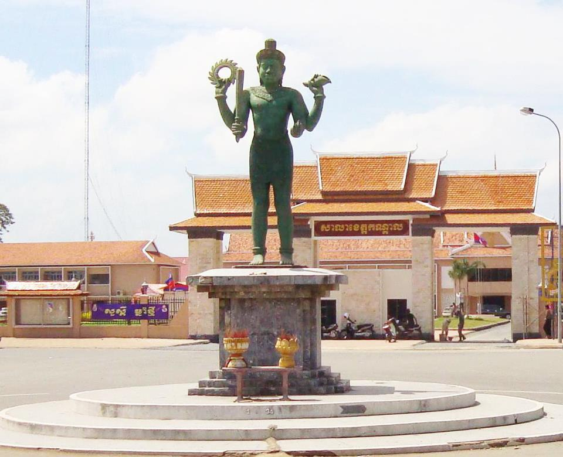

ការពិពណ៏នាអំពី ខេត្តនីមួយៗនៅក្នងប្រទេសកម្ពុជា
ទំព័រដើម
តាកែវ
ភ្នំពេញ
កែប
ព្រះសីហនុ
ស្វាយរៀង
កំពង់ធំ
បាត់ដំបង
ពោធ៏សាត់
សៀមរាប
រតនគីរី
មណ្ឌលគីរី
ក្រចេះ
ត្បូងឃ្មុំ
កំពង់ចាម
ព្រៃវែង
កណ្តាល
ឧត្តរមានជ័យ
កំពង់ឆ្នាំង
កំពង់ស្ពឺ
បន្ទាយមានជ័យ
កោះកុង
ប៉ៃលិន
កំពត
ស្ទឹងត្រែង
ព្រះវិហារ
ទំនាក់ទំនង
ខេត្តកណ្តាល

ព័ត៌មានសង្ខេបអំពីខេត្តកណ្តាល
> ខេត្តនៃប្រទេសកម្ពុជាដែលមានទីតាំងនៅប៉ែកអាគ្នេយ៍នៃប្រទេសនេះ។ ខេត្តកណ្តាល បានបង្ហាញថា មានសក្ដានុពលជាច្រើនដូចជា វិស័យកសិកម្ម ឧស្សាហកម្ម និង ទេសចរណ៍ ជាដែលវិស័យគោលចម្បងក្នុងការអភិវឌ្ឍសេដ្ឋកិច្ចខេត្តទទួលបានការរីកចម្រើន។ រីឯសម្រាប់ប្រព័ន្ធ ហេដ្ឋារចនាសម្ព័ន្ធនៅខេត្តកណ្ដាលគឺជា ខេត្តមានផ្លូវជាតិធំសំខាន់ៗជាច្រើន សម្រាប់តភ្ជាប់ទៅកាន់បណ្ដាខេត្តនានា។ ខេត្តកណ្ដាល ក៏មានស្ពានធំៗឆ្លងទន្លេផងដែរ នឹងមាន ព្រលានយន្តហោះកម្រិតអន្តរជាតិមួយ១កន្លែងផងដែរ។ កសិកម្ម និងការនេសាទ គឺជាឧស្សាហកម្មសំខាន់ពីរនៃខេត្តនេះផងដែរ។
> កណ្ដាលគឺជាខេត្តមួយក្នុងចំណោមខេត្តដែលស្ដុកស្ដម្ភជាងគេក្នុងប្រទេស។ ខេត្តកណា្តលមានស្រុកចំនួន១១ ក្រុង១ ឃុំ១៤៧ ភូមិចំនួន១០៨៧ និង១៤៧សង្កាត់ មានប្រជាជនចំនួន ១០៧៥១២៥នាក់ ហើយខេត្តនេះផងដែរមានផែ្ទដី ៣៥៦៨គីឡូម៉ែតការេ។ ហើយខេត្តនេះផងដែរមានផែ្ទដី ៣៥៦៨ សហាតិមាត្រការ៉េ។ ប្រជាជនខេត្តកណា្តលភាគច្រើនប្រកបរបរកសិកម្ម ដាំដំណាំ ក្រៅពីនេះរដូវធើ្វស្រែ ពួកគាត់មានរបរមួយទៀតគឺ របរឡើងត្នោត និងធើ្វស្រូវប្រាំង ព្រមទាំងដាំដំណាំផ្សេងៗទៀត ដើម្បីផ្គត់ផ្គង់ជីវភាពគ្រួសាររបស់ខ្លួន។
> ខេត្តកណ្ដាលព័ទ្ធជុំវិញរាជធានីភ្នំពេញទាំងមូល។ ខេត្តនេះក៏ជាប៉ែកមួយនៃផ្ទៃទីក្រុងមេភ្នំពេញធំជាងគេដែលមានប្រជាជនមួយលាននាក់រស់នៅក្នុង និង ព័ទ្ធជុំវិញខេត្ត។ កាលណាយើងធ្វើដំណើរចេញពីភ្នំពេញ ព្រំដែនរវាងខេត្ត-រាជធានីទាំងពីរស្ទើរតែមើលមិនដឹង។
> ខេត្តកណ្ដាល មានចំនួន 11 ស្រុក និង 1 ក្រុង :
- ស្រុកអង្គស្នួល
- ស្រុកកណ្តាលស្ទឹង
- ស្រុកកោះធំ
- ស្រុកខ្សាច់កណ្ដាល
- ស្រុកកៀនស្វាយ
- ស្រុកលើកដែក
- ស្រុកល្វាឯម
- ស្រុកមុខកំពូល
- ស្រុកពញាឮ
- ស្រុកស្អាង
- ស្រុកសំពៅពូន